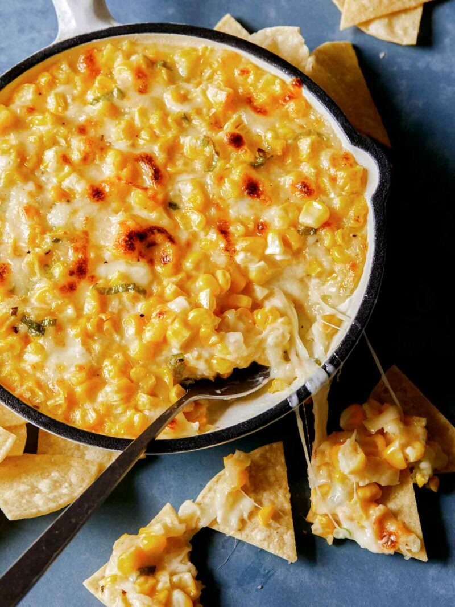

Korean Corn Cheese

Description
A simple and delicious recipe for creamy, gooey Korean Corn Cheese. Minimal ingredients and made in under 20 minutes. Serve with chips or bread for dipping as a yummy appetizer, or keep it simple and serve as a side dish. We love it with freshly grilled meat.
Ingredients
- 2 ears fresh sweet corn kernels kernels removed and cobbs discarded
- 1/2 cup mayonnaise
- 4 ounces shredded mozzarella
- 1 1/2 teaspoons sugar
- 2 green onions, thinly sliced
- ▢ salt and pepper to taste
Instructions
- Preheat oven to 400˚F.
- Combine all ingredients into a mixing bowl and stir together.
- Pour mixture into a lightly greased baking dish.
- Bake for 10 minutes or until mixture melts and bubbles.
- Transfer dish to broiler and broil for 2 minutes or until top is browned.
- Serve immediately.